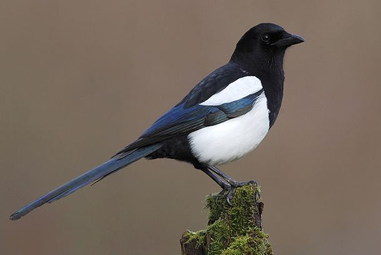

 With its noisy chattering, black-and-white plumage and long tail, there is nothing else quite like the magpie in the UK. The head, breast and back are black, the shoulders patches, belly and flanks are white. The black wings and tail, however, are a beautiful glossy, iridescent blue, green and purple. The bill and legs are blackWhen seen close-up its black plumage takes on an altogether more colourful hue with a purplish-blue iridescent sheen to the wing feathers and a green gloss to the tail. Magpies seem to be jacks of all trades - scavengers, predators and pest-destroyers, their challenging, almost arrogant attitude has won them few friends. Non-breeding birds will gather together in flocks.
Absolutely anything. They have quite a varied diet in their original rural habitat - insects, rodents, carrion, eggs and nestlings, grain, berries and fruit. This variety carries over into the suburban garden where they will also eat allsorts of kitchen scraps and bird foods.
Woodland, Farmland, Grassland, Heathland, Upland, Urban and suburban Wetland
You can find magpies across England, Wales and N Ireland, but more localised in Scotland, absent from the Highlands. They are seen in a range of habitats from lowland farmland to upland moors.
You can see Magpie's all year-round.